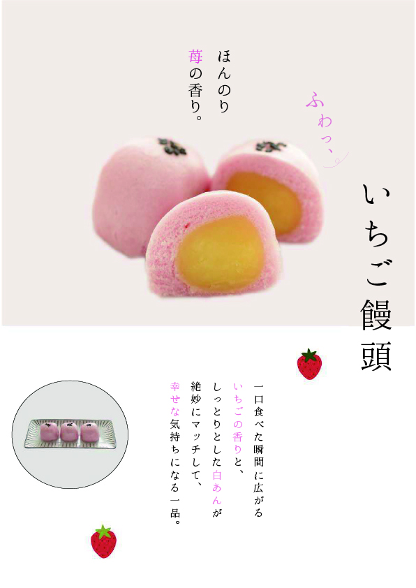

Graphic Works / Poster Design
和菓子のやさしさと可愛らしさを、現代的な余白と縦組みで表現したポスターデザインです。

概要
和菓子のやわらかさと親しみやすさを、現代的な見せ方で表現したポスターデザインです。 商品そのものの魅力が直感的に伝わるよう、情報を絞ったシンプルな構成で制作しました。
ターゲット
20〜30代女性をメインに、SNSや店頭で見たときに「かわいい」「食べてみたい」と感じる層を想定しています。
課題
和菓子は落ち着いた印象が強く、若年層には少し距離を感じられることがあります。 そのため、和の空気感を残しながらも、やさしく親しみやすい印象へ調整する必要がありました。
デザイン意図
余白を広く取り、商品を主役に見せるミニマルなレイアウトにすることで、 いちご饅頭のやわらかな質感が引き立つよう設計しました。
淡いピンクとやさしいトーンで統一し、可愛らしさの中にも上品さが感じられるようバランスを整えています。 また、縦組みの文字配置にすることで、和の雰囲気を保ちながら現代的な印象になるよう意識しました。
工夫した点
色数を絞ることで全体に統一感を持たせ、視線が自然に商品へ集まるよう構成しています。 “かわいい”だけに寄りすぎず、贈答用にも合うような落ち着きも持たせました。